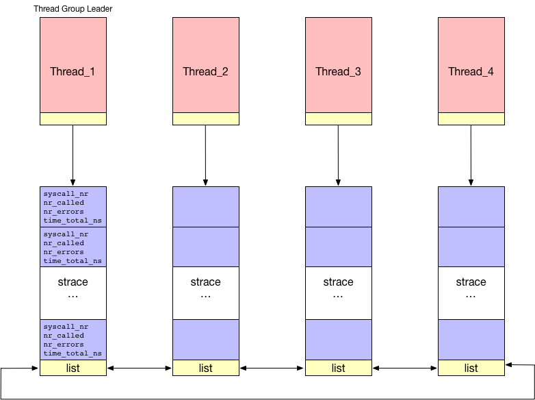
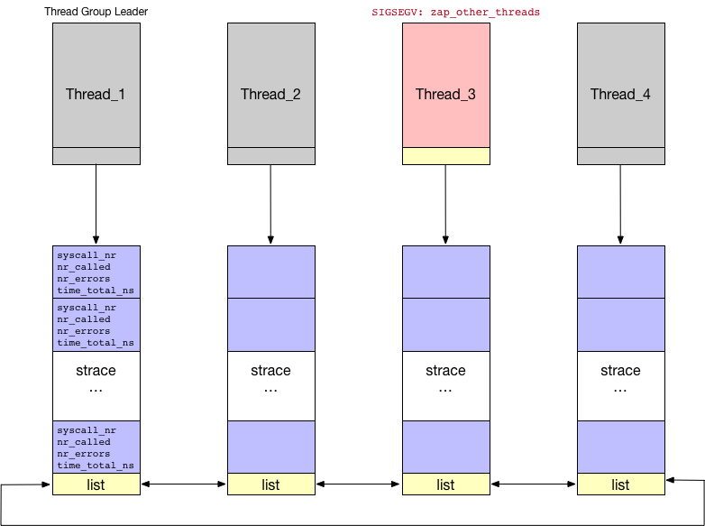

Lego Profile strace
Lego has a built-in kernel-version syscall tracer, similar to strace utility in the user space. Below we will just call our Lego’s syscall tracer as strace for simplicity.
Design
There are essentially three important metrics to track for each syscall
- number of times invoked
- number of times error happened
- total execution, or per-call latency
Besides, there is another important design decision: 1) should all threads within a process share one copy of data to maintain bookkeeping, or 2) should each thread do its bookkeeping on its own set of data? Our answer is 2). For two reasons:
- Performance: set of counters are
atomic_t, updating is performed by a locked instruction. The first solution will add huge overhead while tracing heavily multithreaded applications. - Simplicity: in order to track the latency of each syscall, we need to know when it enter and when it finish. As threads come and go, it is hard to maintain such information. To make it worse, a preemptable kernel, or schedule-related syscalls will move threads around cores.
Below is our simple design, where each thread has a struct strace_info, which include a set of counters for each syscall. All strace_info within a process are chained together by a doubly-linked list.

When we want to look at the strace statistic numbers, we need to accumulate counters from all threads within a process, including those dead threads. We do the accumulate when the last thread of this process is going to exit.
The benefit of doubly-linked strace_info is we can walk through the list starting anywhere. There is really no list head here. In fact, everyone can be the head. See how we respect equality? Besides, even if task_struct is reaped, strace_info is still there and linked.
For example, assume thread_3 has a SIGSEGV, and did a zap_other_threads. And he is the last standing live thread of this process. When it is going to exit, it will accumulate all the statistic and do the necessary printing.

Details
There are essentially three hooks in core kernel:
- syscall: before and after
sys_call_table - fork/clone: create
strace_infofor each thread - do_exit(): when group_dead(signal->live==1), accumulate
Example Output
1 2 3 4 5 6 7 8 9 10 11 12 13 14 15 16 17 18 19 20 21 22 23 24 25 26 27 28 | [ 1017.047366] Kernel strace [ 1017.050276] Task: 20:20 nr_accumulated_threads: 46 [ 1017.055837] % time seconds usecs/call calls errors syscall [ 1017.063213] ------ -------------- ----------- --------- --------- ---------------- [ 1017.071648] 98.16 33.839597842 1879978 18 0 sys_futex [ 1017.079406] 0.26 0.260143997 260144 1 0 sys_execve [ 1017.087260] 0.18 0.185456860 7133 26 0 sys_write [ 1017.095017] 0.50 0.050189546 913 55 0 sys_munmap [ 1017.102870] 0.25 0.025223661 255 99 0 sys_mmap [ 1017.110531] 0.50 0.000505134 12 45 0 sys_clone [ 1017.118288] 0.20 0.000202327 26 8 0 sys_read [ 1017.125947] 0.14 0.000144065 17 9 0 sys_open [ 1017.133608] 0.67 0.000067251 7 11 0 sys_brk [ 1017.141171] 0.30 0.000030361 7 5 0 sys_newfstat [ 1017.149219] 0.64 0.000006410 1 9 0 sys_close [ 1017.156976] 0.48 0.000004842 1 45 0 sys_madvise [ 1017.164927] 0.34 0.000003443 1 47 0 sys_set_robust_list [ 1017.173653] 0.21 0.000002137 1 52 0 sys_mprotect [ 1017.181702] 0.71 0.000000717 1 4 0 sys_gettimeofday [ 1017.190137] 0.60 0.000000608 1 3 0 sys_time [ 1017.197797] 0.51 0.000000513 1 2 0 sys_getrlimit [ 1017.205942] 0.49 0.000000498 1 2 0 sys_rt_sigprocmask [ 1017.214572] 0.46 0.000000469 1 4 0 sys_rt_sigaction [ 1017.223008] 0.45 0.000000453 1 2 0 sys_arch_prctl [ 1017.231249] 0.27 0.000000272 1 2 0 sys_newuname [ 1017.239298] 0.13 0.000000135 1 2 0 sys_set_tid_address [ 1017.248025] ------ -------------- ----------- --------- --------- ---------------- [ 1017.256460] 100.00 34.361581541 451 0 total |
–
Yizhou Shan
Created: April 05, 2018
Last Updated: April 05, 2018